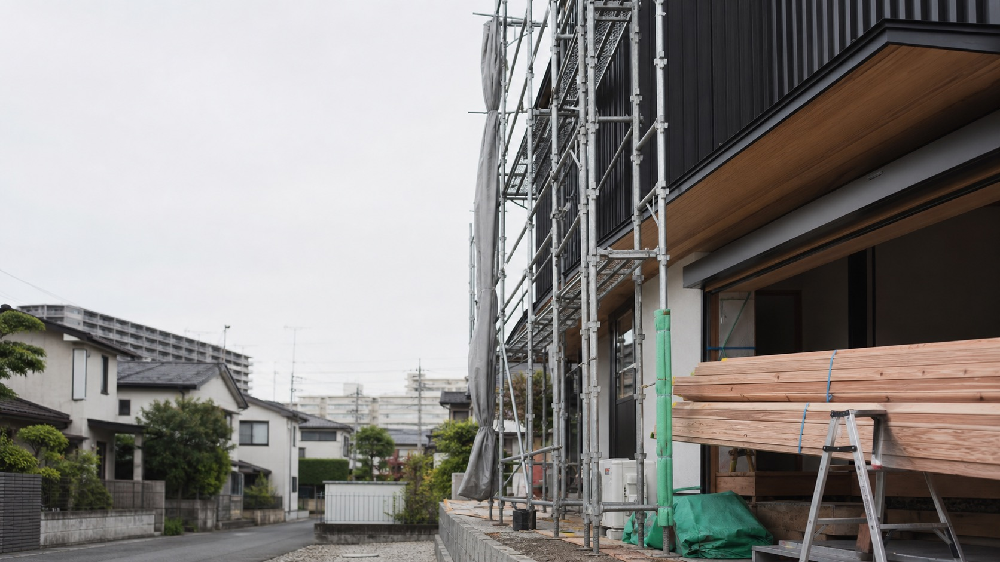
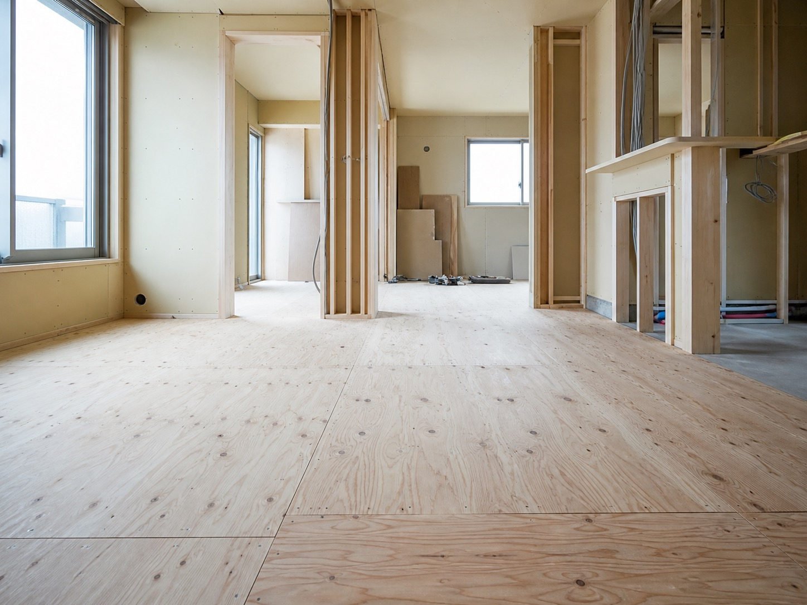
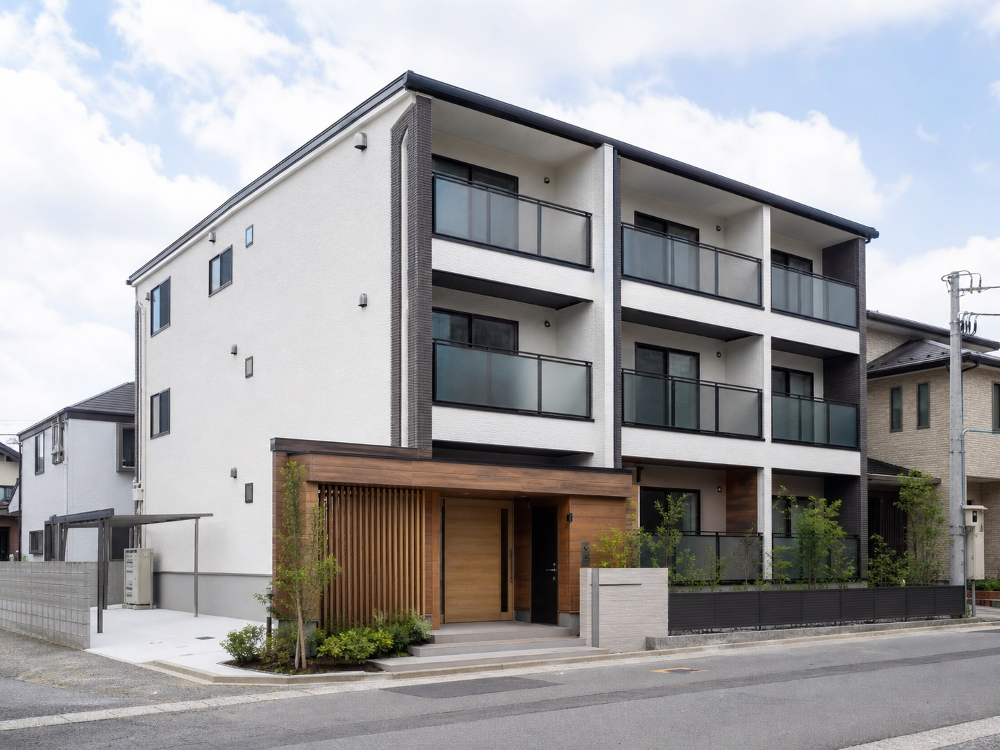
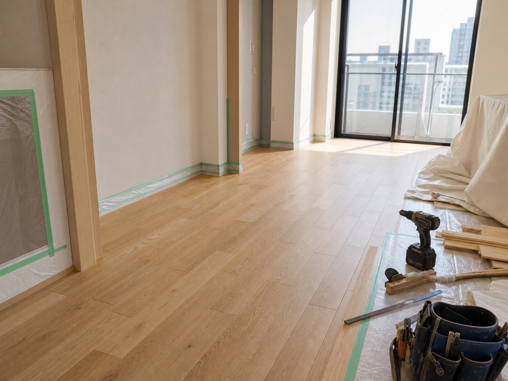
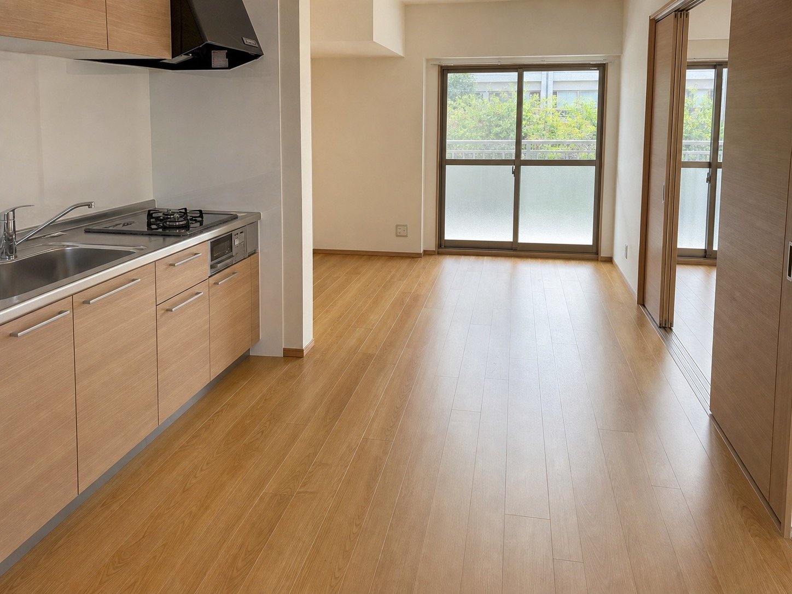

新築工事における大工工事
主にマンションやアパートの新築工事に関わる大工工事に対応。現場の進行に合わせ、下地や納まりを整えます。

仮画像Concept
床工事は建築工事の終盤に行われ、仕上がりの印象と使い心地を左右する仕事です。山口工務店は、床の高さ調整や空気の通り道まで考えながら、現場ごとに必要な納まりを見極めます。
このデモでは、既存サイトの「大工工事・床工事」「職人募集」「福岡県内・九州エリア対応」という情報を、より営業先に伝わりやすい導線へ整理しています。

Service
主にマンションやアパートの新築工事に関わる大工工事に対応。現場の進行に合わせ、下地や納まりを整えます。
床材や建物条件、土地の風土に合わせて、美観性・機能性・耐久性に配慮した施工を行います。
公式サイトでは新築工事だけでなくリフォームにも対応可能と記載。詳細な対応範囲は公開前に要確認です。
Strength
創業 2012年
公式会社概要に記載の創業情報を反映しています。
建設許可
福岡県知事許可（般-3）第114631号を確認済みです。
対応エリア
大野城市を中心とした福岡県内。床工事は九州エリア対応可能と記載があります。
Works
既存サイトでは「マンション下地」など施工中の様子が掲載されています。ここでは実写真へ差し替える前提の仮画像で、職人仕事が伝わるギャラリーにしています。



Recruit
公式サイトでは、一人親方の大工さんや職人さんの募集導線が確認できます。仕事内容・条件・募集状況は公開前に最新情報の確認が必要です。
採用について問い合わせるCompany
Contact
電話での問い合わせ導線を残しながら、営業先が見たときに内容を整理して送れるフォームを想定しています。
このフォームは営業提案用サンプルです。実際には送信されません。